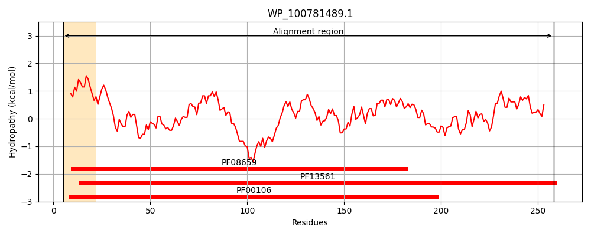
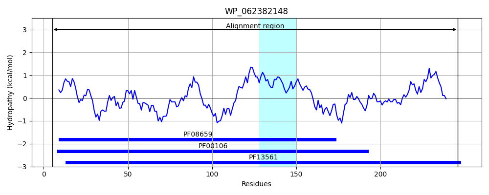
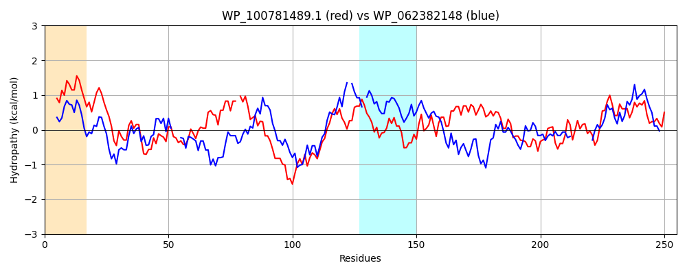

Hit Accession: WP_062382148
Hit TCID: 1.A.115.1.5
Hit Description: gnl|BL_ORD_ID|21287 gnl|TC-DB|WP_062382148.1|1.A.115.1.5 SDR family oxidoreductase [Pseudomonas abietaniphila]
Mach Len: 255
e:0.000000
Query TMS Count : 1
Hit TMS Count: 1
TMS-Overlap Score: 0.000000
Predicted Substrates:None
BLAST Alignment:
Score: 220 , Bit scores: 89 bits, E-value: 2.7e-21, Alignment length: 255, Percentage identity: 29
Query: 5 LSGKVALVTASTAGIGFAIAKGLAESGAEIIINGRSEQSVNAAIARLQNEVSGAKARPAIADLSDADGAAQLLRAVTG-VDILVNNAGIYGPQDFYATDDATWDNYWQTNVMSGVRLSRGLLPAMVSKGWGRVVFISSESARNIPADMIHYGVTKTAQLSLARGLAKYVAGSGVTVNSVLPGPTISDGFAEMLKYDVAKTGKSLEELAKAFVMTHRPSSVIQRAASVEEVANMVVYVCSPQASATSGAALRVDGG 258
L GK+ALVT T GIG A AK AE GA + I GR + ++AA+AR+ N + +L D + + G +D+L NAG +A + + + NV + + LP +++KG V+ S + + A Y +K A + AR + V VN++ PG T + G ++ D A+ L+ LA M R EE+A +++ S AS +G L VDGG
Sbjct: 5 LEGKIALVTGGTTGIGLATAKRFAEEGAYVYITGRRQAELDAAVARVGNATG---VQVDSTNLEQLDALYRQIGTEKGRLDVLFANAGGGSMLPLGDITEAQYQDTFDRNVKGVLFTVQKALP-LLAKG-ASVILTGSTAGSSGTAAFSVYAASKAAVRAFARNWILDLKDRNVRVNTLSPGATRTPGLVDLAGPDAAQQQGLLDYLASQIPM--------GRVGEPEEIAAAALFLASDDASFVNGIELFVDGG 246 | Protein Hydropathy Plots: |
|---|
|  |  |
Pairwise Alignment-Hydropathy Plot:
|
|---|
|  |